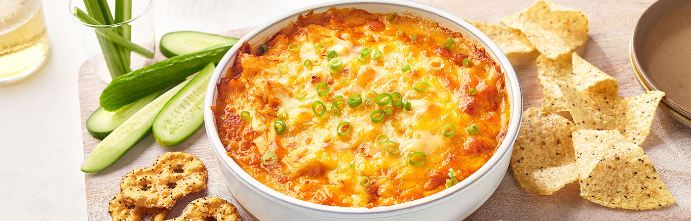

Tasty buffalo dip
Keep the 3 ingredients you need to make this Easy Buffalo Chicken Dip on hand and you're always 35 minutes away from one of the most popular dips ever invented!
There's something about the combination of chicken and cheese with a rich and creamy Buffalo sauce that makes everyone happy. This version keeps it simple- chicken,
Monterey Jack cheese and condensed spicy Buffalo-style cream of chicken soup, baked until hot and bubbling. You don't need to add cream cheese or Buffalo wing sauce
since the creaminess and tangy spicy Buffalo flavor is already in the soup! Jazz it up with some crumbled blue cheese, if you like, and enjoy anytime!
Ingredients
1 can (10 1/2 ounces) Campbell's® Condensed Spicy Buffalo-Style Cream of Chicken Soup
2 cans (12.5 ounces each) Swanson® Premium White Chicken Breast in Water, drained
2 cups shredded Monterey Jack cheese or Colby Jack cheese (about 8 ounces)r
Steps
Step 1
Heat the oven to 350°F. Stir the soup, chicken and cheese in a bowl. Spoon the mixture into a 1 1/2-quart baking dish.
Step 2
Bake for 25 minutes or until hot and bubbling. Serve with tortilla chips, crackers, vegetables or your favorite dippers.